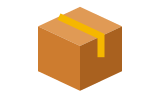
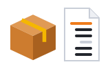
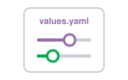
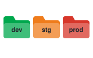
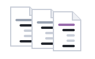
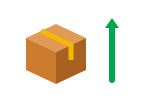
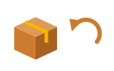

01Namespaces · Namespacenamespace
A namespace is a folder inside the cluster.
Namespace គឺជាថតមួយ នៅក្នុង cluster។
Helm និង namespace · រៀបចំ cluster ឲ្យមានរបៀប ហើយដំឡើងកម្មវិធីជាកញ្ចប់
Namespace បែងចែក cluster ជាថតៗ។ Helm វេចខ្ចប់ YAML ជាកញ្ចប់ ដើម្បីដំឡើងម្តងទៀតបានងាយ។

Helmpackage manager
Chartកញ្ចប់ template
Valuesការកំណត់តាម environmentតាមលំដាប់៖ namespace → បញ្ហា YAML ដដែលៗ → chart → upgrade និង rollback។
Space listen · ← → move · K show text
A namespace is a folder inside the cluster.
Namespace គឺជាថតមួយ នៅក្នុង cluster។

We keep dev, staging and production in different namespaces.
យើងដាក់ dev, staging និង production ក្នុង namespace ផ្សេងៗគ្នា។
A resource quota limits how much one namespace can use.
Resource quota កំណត់ថា namespace មួយអាចប្រើបានប៉ុន្មាន។

Writing the same YAML for every app gets boring.
ការសរសេរ YAML ដដែលៗ សម្រាប់គ្រប់កម្មវិធី គឺគួរឲ្យធុញ។
Helm is a package manager for Kubernetes.
Helm គឺជា package manager សម្រាប់ Kubernetes។
A Helm chart is a package of YAML templates.
Helm chart គឺជាកញ្ចប់នៃ template YAML។
We put the settings for each environment in a values file.
យើងដាក់ការកំណត់សម្រាប់ environment នីមួយៗ ក្នុងឯកសារ values។

helm upgrade installs or updates a release.
helm upgrade ដំឡើង ឬ update release មួយ។

helm rollback takes a release back to an earlier version.
helm rollback នាំ release មួយ ត្រឡប់ទៅកំណែមុន។
Not by itself. You also need RBAC and network policies.
មិនមែនតែវាឯងទេ។ អ្នកត្រូវការ RBAC និង network policy ផងដែរ។
តាមលំនាំដើម pod ក្នុង namespace ផ្សេងគ្នា នៅតែនិយាយគ្នាបាន។
Don't. The next helm upgrade will overwrite it. Change the values file.
កុំកែ។ helm upgrade លើកក្រោយនឹងសរសេរជាន់វា។ ត្រូវប្តូរក្នុងឯកសារ values។
ការកែដោយដៃ នឹងបាត់ ហើយគ្មានអ្នកណាដឹង។
It's called prod.확인 필요 · checkcheck
វាមានឈ្មោះថា prod។
Use the official Helm chart and set our values.
ប្រើ Helm chart ផ្លូវការ ហើយកំណត់ values របស់យើង។
A chart is the package. A release is one install of it.
Chart គឺជាកញ្ចប់។ Release គឺជាការដំឡើងវាម្តង។
Tap a word's play button to hear it. Hide one side, then recall it before you tap to check.
A namespace is a folder inside the cluster. We keep dev, staging and production in different namespaces. A resource quota limits how much one namespace can use.
Namespace គឺជាថតមួយ នៅក្នុង cluster។ យើងដាក់ dev, staging និង production ក្នុង namespace ផ្សេងៗគ្នា។ Resource quota កំណត់ថា namespace មួយអាចប្រើបានប៉ុន្មាន។
Writing the same YAML for every app gets boring. Helm is a package manager for Kubernetes.
ការសរសេរ YAML ដដែលៗ សម្រាប់គ្រប់កម្មវិធី គឺគួរឲ្យធុញ។ Helm គឺជា package manager សម្រាប់ Kubernetes។
A Helm chart is a package of YAML templates. We put the settings for each environment in a values file.
Helm chart គឺជាកញ្ចប់នៃ template YAML។ យើងដាក់ការកំណត់សម្រាប់ environment នីមួយៗ ក្នុងឯកសារ values។
helm upgrade installs or updates a release. helm rollback takes a release back to an earlier version.
helm upgrade ដំឡើង ឬ update release មួយ។ helm rollback នាំ release មួយ ត្រឡប់ទៅកំណែមុន។
Q. Does a namespace keep apps safe from each other?
Q. Namespace ការពារកម្មវិធីពីគ្នាទៅវិញទៅមកទេ?
A. Not by itself. You also need RBAC and network policies.
A. មិនមែនតែវាឯងទេ។ អ្នកត្រូវការ RBAC និង network policy ផងដែរ។
Q. Can I edit the YAML that Helm installed?
Q. ខ្ញុំអាចកែ YAML ដែល Helm បានដំឡើងបានទេ?
A. Don't. The next helm upgrade will overwrite it. Change the values file.
A. កុំកែ។ helm upgrade លើកក្រោយនឹងសរសេរជាន់វា។ ត្រូវប្តូរក្នុងឯកសារ values។
Q. Which namespace is production?
Q. Namespace មួយណាជា production?
A. It's called prod.
A. វាមានឈ្មោះថា prod។
Q. How do I install Redis?
Q. តើខ្ញុំដំឡើង Redis យ៉ាងដូចម្តេច?
A. Use the official Helm chart and set our values.
A. ប្រើ Helm chart ផ្លូវការ ហើយកំណត់ values របស់យើង។
Q. What's the difference between a chart and a release?
Q. Chart និង release ខុសគ្នាយ៉ាងដូចម្តេច?
A. A chart is the package. A release is one install of it.
A. Chart គឺជាកញ្ចប់។ Release គឺជាការដំឡើងវាម្តង។
Which values file did you use?
អ្នកបានប្រើឯកសារ values មួយណា?
Let me do a dry run first.
ចាំខ្ញុំសាក dry run ជាមុនសិន។
Say it in your head first, then tap the box to check.